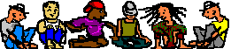

En 1997, je commence à découvrir la Réunion autant que le web, Pour l'ouverture de ma pajouêbe ( oui, c'est comme ça que j'ai appelé ma première page web ), hébergée sur Mygale comme beaucoup l'ont fait à l'époque le crée une rubrique avec un lien par mois sur la Réunion. Le premier lien que je colle sur cette page est un petit site perso que je trouvais bien : La Réunion des branchés, Branché comme moi à internet, j'étais heureux de partager mon entousiasme avec une page qui parlait aussi de la Réunion et d'Internet. Les quelques formules créoles me plaisaient beaucoup car elles étaient éxotiques pour ma culture de zoreil.

Depuis cette petite page sur geocities a évolué et son propriétaire, Bertrand Hoareau l'a fait muter en portail-exotique avec des filles et de la musique: creole.org est né! Le plus interessant sur ce site sont les reportages, les musiques midi, et les recettes de cuisines Réunionnaises. Il y avait même un forum de disscussion commençait à être fréquenté...
merci aux Mary pour l'image
Évidemment, depuis 1997, le site creole.org d'origine a bien évolué tout comme le web a évolué depuis la période du web 1.0. Pour le web en général, je vous laisse seuls juges mais pour certains sites, il est clair que les évolutions ne sont pas toujours pour le meilleur. Le site creole.org s'est vite transformé en collection de liens dont pas mal de liens promotionnels pour les hébergements de tourisme. Le site n'a pas évolué depuis longtemps mais il est toujours là, avec son nom de domaine désirable et son dico de créole réunionnais.
Même si ce n'est plus aujourd'hui le site bien que j'aimerais présenter, c'est quand même une chance une chance d'avoir référencé pour l'ouverture de Reunionweb, un site qui peut, 20 ans après être encore référencé avec une description identique.